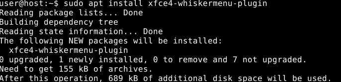

Expected.
OK. I thought the screenshot you posted above is the default. Desktop icons came by default in the other Whonix versions I used.
For the benefit of others, copy the files you need from /usr/share/applications to ~/Desktop/ to create desktop shortcuts.
Patrick, I’m sorry, the program works. But the problem with the wrong time and this is the only trouble that does not affect the work of the program.
Summary
Did you read the text in that screenshot? Did you apply the recommendations in that screenshot?
When moving Tor Browser window to the top and then continuing to move the mouse slightly higher (or alternatively just moving Tor Browser up quickly and not being careful to stop), the window is maximized to the full size of the screen.
Is there a way to prevent this kind of behavior?
Edit: another kind of resizing also happens when moving the window to the side of the screen quickly.
This behavior of course isn’t unique to Tor Browser’s window but to any window.
Edit 2: I found the solution:
Applications -> Settings -> Window Manager Tweaks -> Accessibility Tab -> Uncheck “Automatically tile windows while moving toward the screen edge”
1 Like
That’s such a great decision! I have always disliked KDE, especially in the context of Whonix VM, I really like that!
I am currently enjoying Whonix XFCE and so far nothing to complain about, on the contrary.
I would however have two suggestions:
1. gpa as a replacement for kgpg
To me, having a GUI pgp program is wholly part of the Whonix experience. I really think it serves the purpose of Whonix. Instead of kgpg and its dependencies, I would suggest to include the gpa program, a very lightweight and user-friendly GUI gpg tool:

It only takes 2,153 kB of free space and needs only two packages (gpa and gpgsm). Works well, I have just tested it:

{kind=link}
2. Replace the stock Applications Menu by whisker-menu (panel plugin)
A small and very lightweight (689 kB) package, xfce4-whiskermenu-plugin greatly enhances user-friendliness, by allowing to search for program by their names (a feature every modern OS provides). It really gives the XFCE experience a much more modern feeling in my opinion. No need to look in every subdirectory to find the right program:

{kind=link}
2 Likes
Wow that was quick! Thanks Patrick!
Please add
- language indicator
- audio volume control
- system monitor
Videos in Tor Browser with Whonix-Virtualbox-xfce version doesnt start. (whether its youtube , vimeo …etc)
Note: Whonix-Qubes is not effected + it has nothing to do with TBB security or JS.
no audio mixer in Whonix-WS. steps to produce:
- go to panel and right click on it
- add NEW items…
- Add PulseAudio Plugin
- go to the icon on the panel and right click
- choose “Audio mixer…”
Failed to execute command "pavucontrol".
Failed to execute child process "pavucontrol" (No such file or directory)
if u mean keyboard layout , then its functioning if you change your keyboard layeout from settings. (but keyboard layout as plugin its not there and i dont think its necessary to have). But if you mean by language indicator something else then you need to clarify.
Confirmed its not working, and Better to add the plugin icon to the panel by default.
not necessary , its accessory and i dont think should be added by default. But good maybe to be mentioned in the wiki or a link referring to xfce accessories and programs.
Which version? 14.0.0.9.8 or 14.0.0.9.6?
On a self build 14.0.0.9.8 KVM image it works.
pavucontrol will be added to the packages.
latest one
KVM with xfce?
Yes.
I also tested now self build vbox images. I indeed had problems running videos. They started but immediately stopped. But after I installed the guest additions and also enabled audio output for the VM (not sure if this matters) it worked perfectly. The guest additions should be installed by default in the official images. Could you check if they are present and also if they match the installed vbox version? Tested version was 5.22 .
1 Like
NiceXD:
Please add
- language indicator
Maybe yes. (If it looks ok.) ->
- audio volume control
This may or may not be done after last pull request and will be included
in over next Whonix (point) release.
- system monitor
Maybe yes. (If it looks ok, not too much use of disk space, other issues
i.e. no autostart of it.) ->
Not sure…
https://www.whonix.org/wiki/Dev/Default_Application_Policy
- We must believe that a fair amount of users likes it.
- We must believe that it is usable by a fair amount of users.
I am wondering if it would benefit more users than confuse. The added value is not clear to justify default installation.